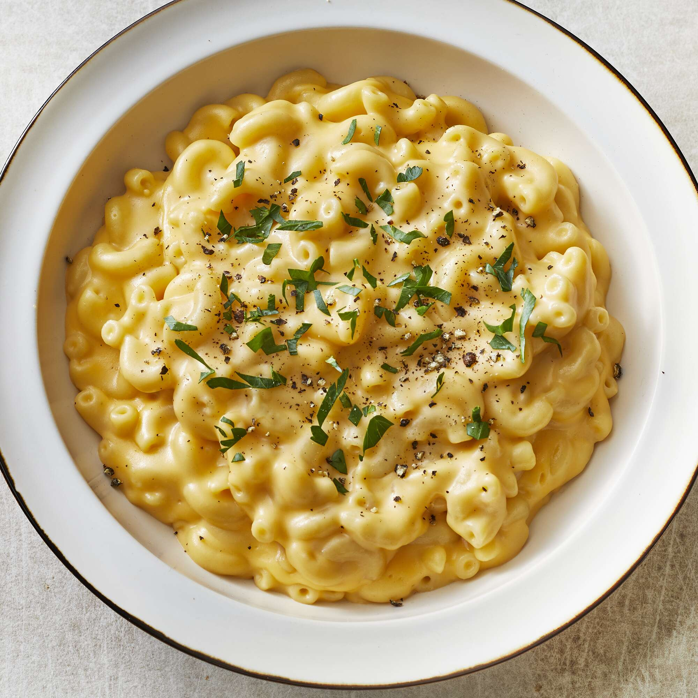

Macaroni

Descritpion
A bowl of delicious creamy macaroni.
An easy step by step guide on making a simple yet great tasting dish
Ingridients
- 1 (8 ounce) box elbow macaroni
- 1/4 cup butter
- 1/4 cup all-purpose flour
- 1/2 teaspoon salt
- ground black pepper to taste
- 2 cups milk
- 2 cups shredded Cheddar cheese
Steps
- Bring a large pot of lightly salted water to a boil. Cook elbow macaroni in the boiling water, stirring occasionally until cooked through but firm to the bite, 8 minutes.
- At the same time, melt butter in a saucepan over medium heat. Add flour, salt, and pepper and stir until smooth, about 5 minutes. Pour in milk slowly, while stirring continuously. Continue to cook and stir until mixture is smooth and bubbling, about 5 minutes, making sure the milk doesn't burn.
- Add Cheddar cheese and stir until melted, 2 to 4 minutes.
- Drain macaroni and fold into cheese sauce until coated.